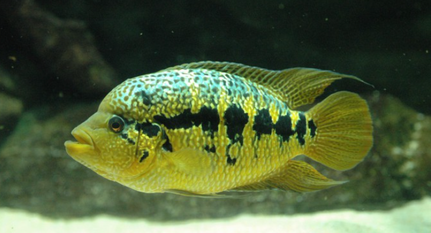

Systématique
- Ordre : Cichliformes
- Famille : Cichlidae
- Genre : Parachromis
- Espèce : P. loisellei

Parachromis loisellei est un cichlidé d'Amérique centrale qui a longtemps été confondu avec P. friedrichsthalii en raison de leur grande ressemblance. Il a été décrit scientifiquement assez récemment (1989) par rapport aux autres espèces du genre.
C'est l'un des "petits" représentants du genre, bien que cela reste relatif. Les mâles atteignent généralement 20 à 25 cm (parfois jusqu'à 30 cm en aquarium), tandis que les femelles sont plus petites (15 à 20 cm). Sa coloration de fond est jaune doré, ornée d'une bande latérale noire souvent continue ou fragmentée en gros blocs, et de marques noires sur la partie supérieure du dos.
Il se distingue de P. friedrichsthalii par une répartition géographique différente et des motifs de coloration généralement plus réguliers sur la ligne latérale.
C'est un prédateur carnivore au tempérament territorial. Bien que considéré comme légèrement moins agressif que ses cousins géants (P. dovii ou P. managuensis), il reste un poisson virulent, surtout en période de reproduction.
Il doit être maintenu en spécifique (couple) ou avec d'autres cichlidés robustes de taille équivalente dans de grands volumes. Il creuse le substrat, particulièrement avant la ponte, ce qui rend la maintenance de plantes enracinées difficile.
Mode : ovipare (pondeur sur substrat découvert).
La reproduction est biparentale et suit le schéma classique des grands cichlidés : nettoyage d'un site de ponte (pierre plate, ardoise), dépose de centaines d'œufs adhésifs, et garde féroce du périmètre. La femelle ventile les œufs tandis que le mâle patrouille.
L'éclosion a lieu après 3 jours environ (à 26°C), et la nage libre intervient quelques jours plus tard. Les alevins grandissent vite avec une nourriture adaptée (nauplies d'artémias).
Dimorphisme sexuel : Les mâles sont plus grands, avec des nageoires impaires (dorsale et anale) plus longues et effilées. Les femelles, plus petites, présentent souvent une coloration jaune plus intense et contrastée lorsqu'elles sont en période de reproduction ou de garde parentale.
Espérance de vie : Environ 8 à 12 ans en captivité.
Il habite les rivières et les lacs du versant Atlantique de l'Amérique centrale. Il préfère les zones où le courant est lent à modéré, avec une eau assez trouble et une structure complexe (bois mort, roches) pour se cacher et chasser à l'affût.
Répartition

Origine naturelle :
- Amérique centrale (versant Atlantique).
- Honduras (rivière Ulua).
- Nicaragua (bassins des grands lacs et rivières).
- Costa Rica (bassin de la rivière Parismina).
Paramètres de maintenance
Température : 24 à 28 °C.
pH : 7,0 à 8,0 (neutre à alcalin).
GH : 10 à 20 °dGH (eau dure).
Courant : Modéré, avec une filtration efficace et une bonne oxygénation.
Volume conseillé : Minimum 450 L pour un couple adulte. Pour une communauté avec d'autres cichlidés, prévoir au minimum 800 à 1000 L.
Régime alimentaire
Régime : carnivore / piscivore.
Dans la nature, il se nourrit de petits poissons et d'invertébrés.
En aquarium, il accepte les granulés de bonne taille, mais doit recevoir régulièrement de la nourriture fraîche ou congelée : crevettes, moules, vers de terre, chair de poisson.